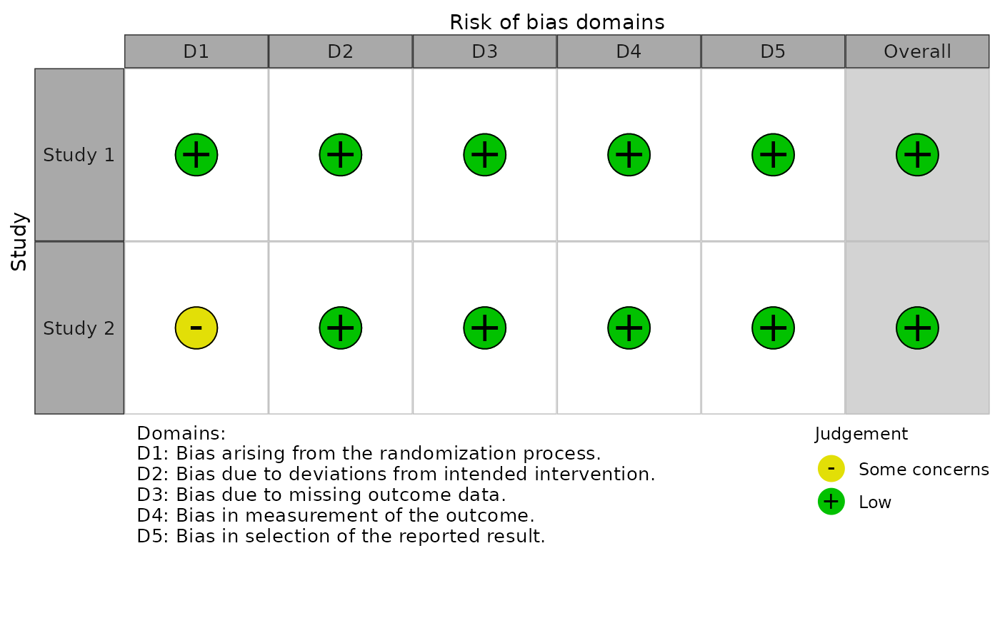

R/rob_traffic_light.R
rob_traffic_light.RdA function to take a summary table of risk of bias assessments and produce a traffic light plot from it.
rob_traffic_light( data, tool, colour = "cochrane", psize = 10, overall = TRUE, ... )
| data | A dataframe containing summary (domain) level risk-of-bias assessments, with the first column containing the study details, the second column containing the first domain of your assessments, and the final column containing a weight to assign to each study. The function assumes that the data includes a column for overall risk-of-bias. For example, a ROB2.0 dataset would have 8 columns (1 for study details, 5 for domain level judgments, 1 for overall judgements, and 1 for weights, in that order). |
|---|---|
| tool | The risk of bias assessment tool used. RoB2.0 (tool='ROB2'), ROBINS-I (tool='ROBINS-I'), and QUADAS-2 (tool='QUADAS-2') are currently supported. |
| colour | An argument to specify the colour scheme for the plot. Default is 'cochrane' which used the ubiquitous Cochrane colours, while a preset option for a colour-blind friendly palette is also available (colour = 'colourblind'). |
| psize | Control the size of the traffic lights. Default is 10. |
| overall | Logical, specifying whether to include an "Overall" risk of bias column in the resulting plot |
| ... | Arguments to be passed to the tool specific functions. |
Risk-of-bias assessment traffic light plot (ggplot2 object)
Other main:
rob_summary()
data <- data.frame( stringsAsFactors = FALSE, Study = c("Study 1", "Study 2"), D1 = c("Low", "Some concerns"), D2 = c("Low", "Low"), D3 = c("Low", "Low"), D4 = c("Low", "Low"), D5 = c("Low", "Low"), Overall = c("Low", "Low"), Weight = c(33.33333333, 33.33333333) ) rob_traffic_light(data, "ROB2")